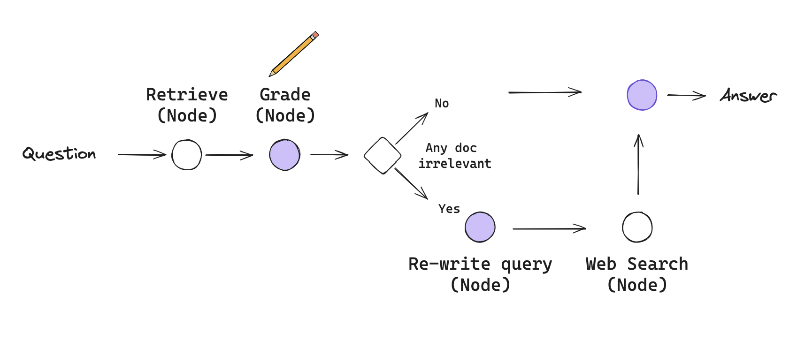

Corrective RAG#

It is a advanced technique within rag that focuses on improving the accuracy and relevance of generated response by incorporating mechanism for self reflective and self grading of retrieved docs.It does this by evaluating the quality of retrieval docs and applying corrective actions when necessary such as refining or replacing incorrect retrivals
import os
from dotenv import load_dotenv
load_dotenv() ## aloading all the environment variable
os.environ["GROQ_API_KEY"]=os.getenv("GROQ_API_KEY")
os.environ["OPENAI_API_KEY"]=os.getenv("OPENAI_API_KEY")
os.environ["TAVILY_API_KEY"]=os.getenv("TAVILY_API_KEY")
### Build Index
from langchain.text_splitter import RecursiveCharacterTextSplitter
from langchain_community.document_loaders import WebBaseLoader
from langchain_community.vectorstores import FAISS
from langchain_openai import OpenAIEmbeddings
### from langchain_cohere import CohereEmbeddings
# Set embeddings
embd = OpenAIEmbeddings()
# Docs to index
urls = [
"https://lilianweng.github.io/posts/2023-06-23-agent/",
"https://lilianweng.github.io/posts/2023-03-15-prompt-engineering/",
"https://lilianweng.github.io/posts/2023-10-25-adv-attack-llm/",
]
# Load
docs = [WebBaseLoader(url).load() for url in urls]
docs_list = [item for sublist in docs for item in sublist]
# Split
text_splitter = RecursiveCharacterTextSplitter.from_tiktoken_encoder(
chunk_size=500, chunk_overlap=0
)
doc_splits = text_splitter.split_documents(docs_list)
# Add to vectorstore
vectorstore=FAISS.from_documents(
documents=doc_splits,
embedding=OpenAIEmbeddings()
)
retriever=vectorstore.as_retriever()
USER_AGENT environment variable not set, consider setting it to identify your requests.
### Retrieval Grader
from langchain_core.prompts import ChatPromptTemplate
from langchain_openai import ChatOpenAI
from pydantic import BaseModel, Field
# Data model
class GradeDocuments(BaseModel):
"""Binary score for relevance check on retrieved documents."""
binary_score: str = Field(
description="Documents are relevant to the question, 'yes' or 'no'"
)
# LLM with function call
llm = ChatOpenAI(model="gpt-3.5-turbo-0125", temperature=0)
structured_llm_grader = llm.with_structured_output(GradeDocuments)
# Prompt
system = """You are a grader assessing relevance of a retrieved document to a user question. \n
If the document contains keyword(s) or semantic meaning related to the question, grade it as relevant. \n
Give a binary score 'yes' or 'no' score to indicate whether the document is relevant to the question."""
grade_prompt = ChatPromptTemplate.from_messages(
[
("system", system),
("human", "Retrieved document: \n\n {document} \n\n User question: {question}"),
]
)
##chain the prompt with the LLM
retrieval_grader = grade_prompt | structured_llm_grader
question = "agent memory"
docs = retriever.invoke(question)
doc_txt = docs[1].page_content
print(retrieval_grader.invoke({"question": question, "document": doc_txt}))
c:\Users\Welcome\OneDrive\Documents\AI\AgenticAi\venv\Lib\site-packages\langchain_openai\chat_models\base.py:1949: UserWarning: Cannot use method='json_schema' with model gpt-3.5-turbo-0125 since it doesn't support OpenAI's Structured Output API. You can see supported models here: https://platform.openai.com/docs/guides/structured-outputs#supported-models. To fix this warning, set `method='function_calling'. Overriding to method='function_calling'.
warnings.warn(
binary_score='no'
### Generate
from langchain import hub
from langchain_core.output_parsers import StrOutputParser
# Prompt
prompt = hub.pull("rlm/rag-prompt")
# LLM
llm = ChatOpenAI(model_name="gpt-3.5-turbo", temperature=0)
# Post-processing
def format_docs(docs):
return "\n\n".join(doc.page_content for doc in docs)
# Chain
rag_chain = prompt | llm | StrOutputParser()
# Run
generation = rag_chain.invoke({"context": docs, "question": question})
print(generation)
Agent memory includes short-term memory for in-context learning and long-term memory for retaining and recalling information over extended periods. The long-term memory allows the agent to leverage an external vector store for fast retrieval of information. Memory is a crucial component in a LLM-powered autonomous agent system, enabling efficient problem-solving and decision-making.
### Question Re-writer
# LLM
llm = ChatOpenAI(model="gpt-3.5-turbo-0125", temperature=0)
# Prompt
system = """You a question re-writer that converts an input question to a better version that is optimized \n
for web search. Look at the input and try to reason about the underlying semantic intent / meaning."""
re_write_prompt = ChatPromptTemplate.from_messages(
[
("system", system),
(
"human",
"Here is the initial question: \n\n {question} \n Formulate an improved question.",
),
]
)
question_rewriter = re_write_prompt | llm | StrOutputParser()
question_rewriter.invoke({"question": question})
'What is the role of memory in artificial intelligence agents?'
### Search
from langchain_community.tools.tavily_search import TavilySearchResults
web_search_tool = TavilySearchResults(k=3)
C:\Users\Welcome\AppData\Local\Temp\ipykernel_18552\730760015.py:5: LangChainDeprecationWarning: The class `TavilySearchResults` was deprecated in LangChain 0.3.25 and will be removed in 1.0. An updated version of the class exists in the :class:`~langchain-tavily package and should be used instead. To use it run `pip install -U :class:`~langchain-tavily` and import as `from :class:`~langchain_tavily import TavilySearch``.
web_search_tool = TavilySearchResults(k=3)
from typing import List
from typing_extensions import TypedDict
class GraphState(TypedDict):
"""
Represents the state of our graph.
Attributes:
question: question
generation: LLM generation
web_search: whether to add search
documents: list of documents
"""
question: str
generation: str
web_search: str
documents: List[str]
from langchain.schema import Document
def retrieve(state):
"""
Retrieve documents
Args:
state (dict): The current graph state
Returns:
state (dict): New key added to state, documents, that contains retrieved documents
"""
print("---RETRIEVE---")
question = state["question"]
# Retrieval
documents = retriever.invoke(question)
return {"documents": documents, "question": question}
def generate(state):
"""
Generate answer
Args:
state (dict): The current graph state
Returns:
state (dict): New key added to state, generation, that contains LLM generation
"""
print("---GENERATE---")
question = state["question"]
documents = state["documents"]
# RAG generation
generation = rag_chain.invoke({"context": documents, "question": question})
return {"documents": documents, "question": question, "generation": generation}
def grade_documents(state):
"""
Determines whether the retrieved documents are relevant to the question.
Args:
state (dict): The current graph state
Returns:
state (dict): Updates documents key with only filtered relevant documents
"""
print("---CHECK DOCUMENT RELEVANCE TO QUESTION---")
question = state["question"]
documents = state["documents"]
# Score each doc
filtered_docs = []
web_search = "No"
for d in documents:
score = retrieval_grader.invoke(
{"question": question, "document": d.page_content}
)
grade = score.binary_score
if grade == "yes":
print("---GRADE: DOCUMENT RELEVANT---")
filtered_docs.append(d)
else:
print("---GRADE: DOCUMENT NOT RELEVANT---")
web_search = "Yes"
continue
return {"documents": filtered_docs, "question": question, "web_search": web_search}
def transform_query(state):
"""
Transform the query to produce a better question.
Args:
state (dict): The current graph state
Returns:
state (dict): Updates question key with a re-phrased question
"""
print("---TRANSFORM QUERY---")
question = state["question"]
documents = state["documents"]
# Re-write question
better_question = question_rewriter.invoke({"question": question})
return {"documents": documents, "question": better_question}
def web_search(state):
"""
Web search based on the re-phrased question.
Args:
state (dict): The current graph state
Returns:
state (dict): Updates documents key with appended web results
"""
print("---WEB SEARCH---")
question = state["question"]
documents = state["documents"]
# Web search
docs = web_search_tool.invoke({"query": question})
web_results = "\n".join([d["content"] for d in docs])
web_results = Document(page_content=web_results)
documents.append(web_results)
return {"documents": documents, "question": question}
### Edges
def decide_to_generate(state):
"""
Determines whether to generate an answer, or re-generate a question.
Args:
state (dict): The current graph state
Returns:
str: Binary decision for next node to call
"""
print("---ASSESS GRADED DOCUMENTS---")
state["question"]
web_search = state["web_search"]
state["documents"]
if web_search == "Yes":
# All documents have been filtered check_relevance
# We will re-generate a new query
print(
"---DECISION: ALL DOCUMENTS ARE NOT RELEVANT TO QUESTION, TRANSFORM QUERY---"
)
return "transform_query"
else:
# We have relevant documents, so generate answer
print("---DECISION: GENERATE---")
return "generate"
from langgraph.graph import END, StateGraph, START
workflow = StateGraph(GraphState)
# Define the nodes
workflow.add_node("retrieve", retrieve) # retrieve
workflow.add_node("grade_documents", grade_documents) # grade documents
workflow.add_node("generate", generate) # generate
workflow.add_node("transform_query", transform_query) # transform_query
workflow.add_node("web_search_node", web_search) # web search
# Build graph
workflow.add_edge(START, "retrieve")
workflow.add_edge("retrieve", "grade_documents")
workflow.add_conditional_edges(
"grade_documents",
decide_to_generate,
{
"transform_query": "transform_query",
"generate": "generate",
},
)
workflow.add_edge("transform_query", "web_search_node")
workflow.add_edge("web_search_node", "generate")
workflow.add_edge("generate", END)
# Compile
app = workflow.compile()
from IPython.display import Image, display
display(Image(app.get_graph(xray=True).draw_mermaid_png()))
app.invoke({"question":"What are the types of agent memory?"})
---RETRIEVE---
---CHECK DOCUMENT RELEVANCE TO QUESTION---
---GRADE: DOCUMENT RELEVANT---
---GRADE: DOCUMENT RELEVANT---
---GRADE: DOCUMENT NOT RELEVANT---
---GRADE: DOCUMENT RELEVANT---
---ASSESS GRADED DOCUMENTS---
---DECISION: ALL DOCUMENTS ARE NOT RELEVANT TO QUESTION, TRANSFORM QUERY---
---TRANSFORM QUERY---
---WEB SEARCH---
---GENERATE---
{'question': 'What different types of memory do agents possess?',
'generation': 'Agents possess short-term memory and long-term memory. Short-term memory is used for in-context learning and has a limited capacity, while long-term memory allows agents to retain and recall information over extended periods. These memory types play a crucial role in shaping the behavior and capabilities of autonomous agents.',
'web_search': 'Yes',
'documents': [Document(id='8268e2bf-13f4-457c-ab3c-71eb28fccfbc', metadata={'source': 'https://lilianweng.github.io/posts/2023-06-23-agent/', 'title': "LLM Powered Autonomous Agents | Lil'Log", 'description': 'Building agents with LLM (large language model) as its core controller is a cool concept. Several proof-of-concepts demos, such as AutoGPT, GPT-Engineer and BabyAGI, serve as inspiring examples. The potentiality of LLM extends beyond generating well-written copies, stories, essays and programs; it can be framed as a powerful general problem solver.\nAgent System Overview\nIn a LLM-powered autonomous agent system, LLM functions as the agent’s brain, complemented by several key components:\n\nPlanning\n\nSubgoal and decomposition: The agent breaks down large tasks into smaller, manageable subgoals, enabling efficient handling of complex tasks.\nReflection and refinement: The agent can do self-criticism and self-reflection over past actions, learn from mistakes and refine them for future steps, thereby improving the quality of final results.\n\n\nMemory\n\nShort-term memory: I would consider all the in-context learning (See Prompt Engineering) as utilizing short-term memory of the model to learn.\nLong-term memory: This provides the agent with the capability to retain and recall (infinite) information over extended periods, often by leveraging an external vector store and fast retrieval.\n\n\nTool use\n\nThe agent learns to call external APIs for extra information that is missing from the model weights (often hard to change after pre-training), including current information, code execution capability, access to proprietary information sources and more.\n\n\n\n\n\t\n\tOverview of a LLM-powered autonomous agent system.\n\nComponent One: Planning\nA complicated task usually involves many steps. An agent needs to know what they are and plan ahead.', 'language': 'en'}, page_content='Comparison of AD, ED, source policy and RL^2 on environments that require memory and exploration. Only binary reward is assigned. The source policies are trained with A3C for "dark" environments and DQN for watermaze.(Image source: Laskin et al. 2023)\n\nComponent Two: Memory#\n(Big thank you to ChatGPT for helping me draft this section. I’ve learned a lot about the human brain and data structure for fast MIPS in my conversations with ChatGPT.)\nTypes of Memory#\nMemory can be defined as the processes used to acquire, store, retain, and later retrieve information. There are several types of memory in human brains.\n\n\nSensory Memory: This is the earliest stage of memory, providing the ability to retain impressions of sensory information (visual, auditory, etc) after the original stimuli have ended. Sensory memory typically only lasts for up to a few seconds. Subcategories include iconic memory (visual), echoic memory (auditory), and haptic memory (touch).\n\n\nShort-Term Memory (STM) or Working Memory: It stores information that we are currently aware of and needed to carry out complex cognitive tasks such as learning and reasoning. Short-term memory is believed to have the capacity of about 7 items (Miller 1956) and lasts for 20-30 seconds.\n\n\nLong-Term Memory (LTM): Long-term memory can store information for a remarkably long time, ranging from a few days to decades, with an essentially unlimited storage capacity. There are two subtypes of LTM:\n\nExplicit / declarative memory: This is memory of facts and events, and refers to those memories that can be consciously recalled, including episodic memory (events and experiences) and semantic memory (facts and concepts).\nImplicit / procedural memory: This type of memory is unconscious and involves skills and routines that are performed automatically, like riding a bike or typing on a keyboard.\n\n\n\n\n\nCategorization of human memory.\n\nWe can roughly consider the following mappings:'),
Document(id='ba2e937d-848b-4eb0-a56f-d8e9146e62bd', metadata={'source': 'https://lilianweng.github.io/posts/2023-06-23-agent/', 'title': "LLM Powered Autonomous Agents | Lil'Log", 'description': 'Building agents with LLM (large language model) as its core controller is a cool concept. Several proof-of-concepts demos, such as AutoGPT, GPT-Engineer and BabyAGI, serve as inspiring examples. The potentiality of LLM extends beyond generating well-written copies, stories, essays and programs; it can be framed as a powerful general problem solver.\nAgent System Overview\nIn a LLM-powered autonomous agent system, LLM functions as the agent’s brain, complemented by several key components:\n\nPlanning\n\nSubgoal and decomposition: The agent breaks down large tasks into smaller, manageable subgoals, enabling efficient handling of complex tasks.\nReflection and refinement: The agent can do self-criticism and self-reflection over past actions, learn from mistakes and refine them for future steps, thereby improving the quality of final results.\n\n\nMemory\n\nShort-term memory: I would consider all the in-context learning (See Prompt Engineering) as utilizing short-term memory of the model to learn.\nLong-term memory: This provides the agent with the capability to retain and recall (infinite) information over extended periods, often by leveraging an external vector store and fast retrieval.\n\n\nTool use\n\nThe agent learns to call external APIs for extra information that is missing from the model weights (often hard to change after pre-training), including current information, code execution capability, access to proprietary information sources and more.\n\n\n\n\n\t\n\tOverview of a LLM-powered autonomous agent system.\n\nComponent One: Planning\nA complicated task usually involves many steps. An agent needs to know what they are and plan ahead.', 'language': 'en'}, page_content='inquired about current trends in anticancer drug discovery;\nselected a target;\nrequested a scaffold targeting these compounds;\nOnce the compound was identified, the model attempted its synthesis.\n\nThey also discussed the risks, especially with illicit drugs and bioweapons. They developed a test set containing a list of known chemical weapon agents and asked the agent to synthesize them. 4 out of 11 requests (36%) were accepted to obtain a synthesis solution and the agent attempted to consult documentation to execute the procedure. 7 out of 11 were rejected and among these 7 rejected cases, 5 happened after a Web search while 2 were rejected based on prompt only.\nGenerative Agents Simulation#\nGenerative Agents (Park, et al. 2023) is super fun experiment where 25 virtual characters, each controlled by a LLM-powered agent, are living and interacting in a sandbox environment, inspired by The Sims. Generative agents create believable simulacra of human behavior for interactive applications.\nThe design of generative agents combines LLM with memory, planning and reflection mechanisms to enable agents to behave conditioned on past experience, as well as to interact with other agents.\n\nMemory stream: is a long-term memory module (external database) that records a comprehensive list of agents’ experience in natural language.\n\nEach element is an observation, an event directly provided by the agent.\n- Inter-agent communication can trigger new natural language statements.\n\n\nRetrieval model: surfaces the context to inform the agent’s behavior, according to relevance, recency and importance.\n\nRecency: recent events have higher scores\nImportance: distinguish mundane from core memories. Ask LM directly.\nRelevance: based on how related it is to the current situation / query.\n\n\nReflection mechanism: synthesizes memories into higher level inferences over time and guides the agent’s future behavior. They are higher-level summaries of past events (<- note that this is a bit different from self-reflection above)\n\nPrompt LM with 100 most recent observations and to generate 3 most salient high-level questions given a set of observations/statements. Then ask LM to answer those questions.\n\n\nPlanning & Reacting: translate the reflections and the environment information into actions'),
Document(id='0207bf7f-554e-4e1e-85c7-bed3b1a6aa9a', metadata={'source': 'https://lilianweng.github.io/posts/2023-06-23-agent/', 'title': "LLM Powered Autonomous Agents | Lil'Log", 'description': 'Building agents with LLM (large language model) as its core controller is a cool concept. Several proof-of-concepts demos, such as AutoGPT, GPT-Engineer and BabyAGI, serve as inspiring examples. The potentiality of LLM extends beyond generating well-written copies, stories, essays and programs; it can be framed as a powerful general problem solver.\nAgent System Overview\nIn a LLM-powered autonomous agent system, LLM functions as the agent’s brain, complemented by several key components:\n\nPlanning\n\nSubgoal and decomposition: The agent breaks down large tasks into smaller, manageable subgoals, enabling efficient handling of complex tasks.\nReflection and refinement: The agent can do self-criticism and self-reflection over past actions, learn from mistakes and refine them for future steps, thereby improving the quality of final results.\n\n\nMemory\n\nShort-term memory: I would consider all the in-context learning (See Prompt Engineering) as utilizing short-term memory of the model to learn.\nLong-term memory: This provides the agent with the capability to retain and recall (infinite) information over extended periods, often by leveraging an external vector store and fast retrieval.\n\n\nTool use\n\nThe agent learns to call external APIs for extra information that is missing from the model weights (often hard to change after pre-training), including current information, code execution capability, access to proprietary information sources and more.\n\n\n\n\n\t\n\tOverview of a LLM-powered autonomous agent system.\n\nComponent One: Planning\nA complicated task usually involves many steps. An agent needs to know what they are and plan ahead.', 'language': 'en'}, page_content='Sensory memory as learning embedding representations for raw inputs, including text, image or other modalities;\nShort-term memory as in-context learning. It is short and finite, as it is restricted by the finite context window length of Transformer.\nLong-term memory as the external vector store that the agent can attend to at query time, accessible via fast retrieval.\n\nMaximum Inner Product Search (MIPS)#\nThe external memory can alleviate the restriction of finite attention span. A standard practice is to save the embedding representation of information into a vector store database that can support fast maximum inner-product search (MIPS). To optimize the retrieval speed, the common choice is the approximate nearest neighbors (ANN)\u200b algorithm to return approximately top k nearest neighbors to trade off a little accuracy lost for a huge speedup.\nA couple common choices of ANN algorithms for fast MIPS:'),
Document(metadata={}, page_content='## Types of AI agent memory\n\nAI agents can use two broad types of memory: short-term memory and long-term memory. Each type of memory can be designed in different common variations.\n\n### Short-term memory [...] Memory type: STM vs. LTM. STM is used to maintain context and continuity during a single session or task. LTM retains information across sessions and tasks, so an AI agent can learn, adapt and glean insights. LTM types include episodic, semantic and procedural, each providing unique benefits to an AI agent. STM uses relatively little memory capacity and can offer fast performance, while LTM can use extensive memory capacity, which introduces latency and inefficiency to the storage and [...] AI agent memory can be implemented as a straightforward resource -- even a cloud-based database -- and integrated as a service to support the AI agent. The choice and design of the memory defines the memory type, either short-term memory or a specific form of long-term memory.\n\n## Importance of memory in AI agents\nTo bridge this gap and create truly intelligent agents, memory systems need to be integrated into LLMs. These memory systems allow the agent to remember, learn from past experiences, and adapt over time. In this blog post, we’ll explore four key types of memory that are crucial to building intelligent agents: Working Memory, Episodic Memory, Semantic Memory, and Procedural Memory. [...] By combining these different types of memory, we can create agents capable of persistent learning and dynamic reasoning, moving beyond basic static text generation into a more human-like system of interaction.\n\n# What Are the Four Types of Memory in LLM-based Agents?\n\n## 1. Working Memory: The Agent’s Active Context [...] LLM agents can have memory by integrating vector stores, knowledge graphs, or episodic memory modules. This allows them to recall past interactions, learn from them, and maintain context across long sessions.\n\nWhat are the main types of memory systems for AI agents?\n\nShort-term memory for immediate context (the context window) and long-term memory for persistent knowledge (an external database).\n\nWhat’s the difference between reactive agents and cognitive agents?\n> You want both - RAG to inform the LLM, memory to shape its behavior.\n\n## Types of Memory in Agents: A High-Level Taxonomy\n\nAt a foundational level, memory in AI agents comes in two forms:\n\n- Short-term memory: Holds immediate context within a single interaction.\n- Long-term memory: Persists knowledge across sessions, tasks, and time. [...] Just like in humans, these memory types serve different cognitive functions. Short-term memory helps the agent stay coherent in the moment. Long-term memory helps it learn, personalize, and adapt.\n\nLet’s break this down further: [...] | Type | Role | Example |\n --- \n| Working Memory (short-term) | Maintains short-term conversational coherence | “What was the last question again?†|\n| Factual Memory (long-term) | Retains user preferences, communication style, domain context | “You prefer markdown output and short-form answers.†|\n| Episodic Memory (long-term) | Remembers specific past interactions or outcomes | “Last time we deployed this model, the latency increased.†|\n# How These Work Together in Agentic AI\n\nIn an agentic AI system, these memory types collaborate to create a capable, goal-driven agent. Short-term memory handles immediate demands, while long-term memory — encompassing semantic, episodic, and procedural elements — builds a deeper foundation.\n\nSemantic memory provides the facts, episodic memory offers lessons from experience, and procedural memory ensures smooth execution. [...] Sitemap\n\nOpen in app\n\nSign in\n\nSign in\n\n# Memory Types in Agentic AI: A Breakdown\n\nGokcer Belgusen\n\n4 min readApr 6, 2025\n\nAgentic AI — systems designed to act autonomously, make decisions, and pursue goals — relies on various types of memory to function effectively. Drawing from cognitive science concepts, these memory types include\n\n semantic\n episodic\n short-term\n procedural and\n long-term memory.\nResearchers categorize agentic memory in much the same way that psychologists categorize human memory. The influential Cognitive Architectures for Language Agents (CoALA) paper1 from a team at Princeton University describes different types of memory as:\n\n### Short-term memory [...] AI agents typically implement semantic memory using knowledge bases, symbolic AI or vector embeddings, allowing them to process and retrieve relevant information efficiently. This type of memory is used in real-world applications that require domain expertise, such as legal AI assistants, medical diagnostic tools and enterprise knowledge management systems. \n \n For example, an AI legal assistant can use its knowledge base to retrieve case precedents and provide accurate legal advice. [...] Episodic memory allows AI agents to recall specific past experiences, similar to how humans remember individual events. This type of memory is useful for case-based reasoning, where an AI learns from past events to make better decisions in the future. \n \n Episodic memory is often implemented by logging key events, actions and their outcomes in a structured format that the agent can access when making decisions.')]}